4. Testing and Results
4.1 Results
4.2 Shipping Delays and Initial Testing
The first shipment of our PCB disappeared in the mailroom, so in order to begin testing the software we designed, we decided to bring up another BLDC motor control board with similar circuitry. This board similarly drives a three phase BLDC motor with half bridges on each phase. Predictably, there are several differences that required consideration as we brought up the board.
Firstly, the board was designed to execute commutation logic using the Texas Instruments DRV8353FH chip, which drives the external gate drivers. Because our project essentially serves to replace the logic executed by this chip, the first order of modification was to scratch out the traces from the DRV8353FH to the gate drivers. After picking out the traces, we soldered stranded wires to the exposed copper for our Pico signals.
Secondly, the board was designed to operate with Vbus = 48 V, while the Vbus of our motor is rated for 12 V. It is simple to change the bus voltage to 12 V by simply plugging in 12 V to the bus voltage terminals, but the gate drivers were designed to be powered by a DC-DC step down converter. The Texas Instruments LMR51625 converter is implemented on this board to receive a Vin ~ 48 V and to output Vout = 15 V, but we do not have a voltage bus at 48 V, nor do we have a necessity to drive the gate drivers at 15 V. Therefore, we also scratched out these traces, and soldered another stranded wire to the exposed vias to the 15 V polygon pour.
Using this board, we were able to test our commutation logic before waiting for the arrival of our second order. It worked exactly as expected, and we were also able to test the controls on much larger motors than the 15 W motor we ordered!
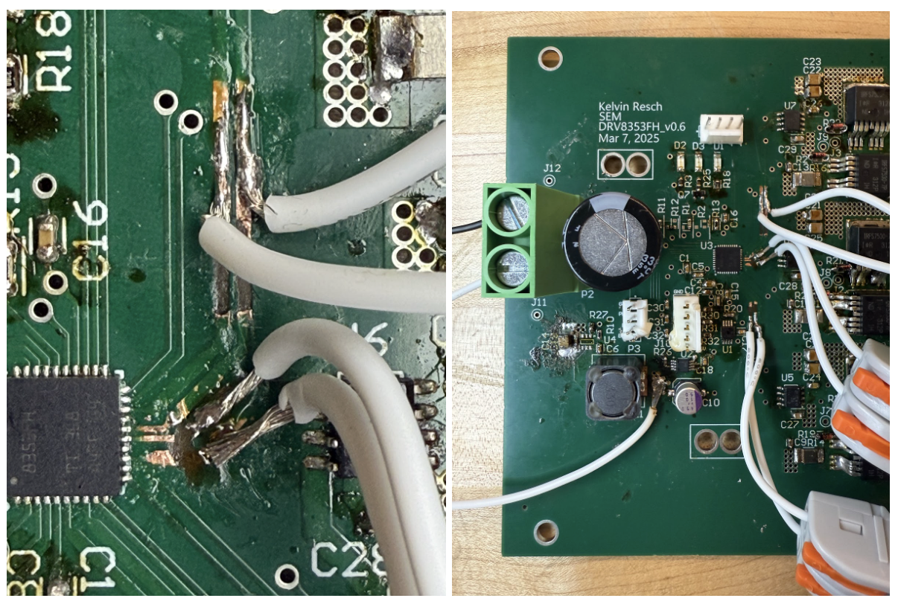Figure 15. Soldered traces closeup. Thank you to Kelvin for the board!
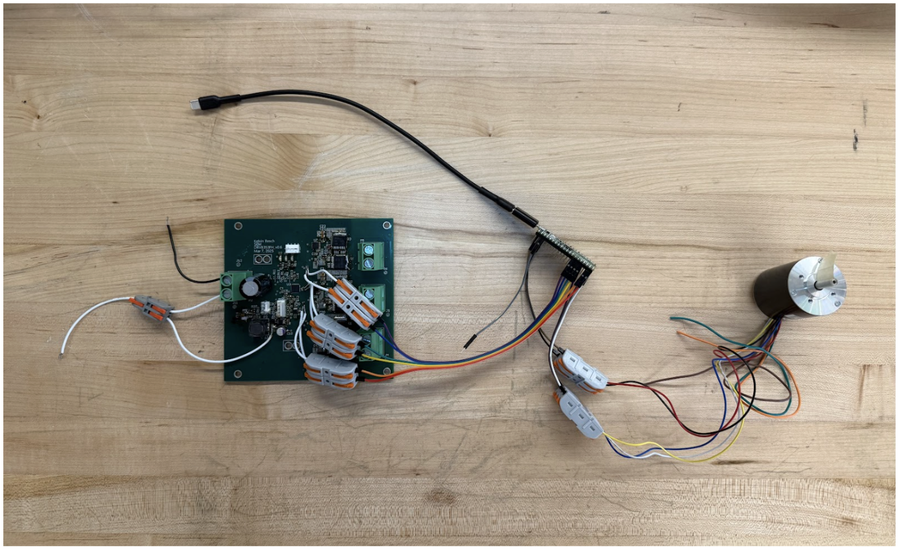Figure 16. Setup with motor and initial testing board.
4.3 PCB Bringup & Modifications
Our second PCB order did arrive, luckily! A day early, even!
The first glaring issue with our PCB was the fact that the headers for the Pico were incorrectly spaced, so we connected the Pico using jumper wires. Furthermore, there were a few bugs in the schematics connecting traces to the Pico pins on the headers: We forgot to include a connection to ground, and one of the hall effect sensor signal lines was wired to a ground pin instead of a GPIO pin. This was remedied by adjusting how the jumper wires connected the Pico to the headers, and by adding a jumper wire to ground.
At this point, we also noticed that the current sensor was applied incorrectly on the PCB. Section 2.2 describes this bug in greater detail, but the result of the error is that the board lacks the capacity to accurately sense current.
After soldering the board, the motor was seemingly driven as expected under no load. However, upon applying a load to see how the board would handle greater current, all six of the gate drivers were fried and had to be replaced. We suspected that this was not due to the current draw, as we limited the current on the power supply; instead, it may have been caused by the fact that the motor had driven the bus voltage line to a potential greater than 12 V, which damaged the components. In order to make the board more resilient to voltage fluctuations on the voltage bus, we placed three parallel 470 uF electrolytic capacitors between the bus line and ground.
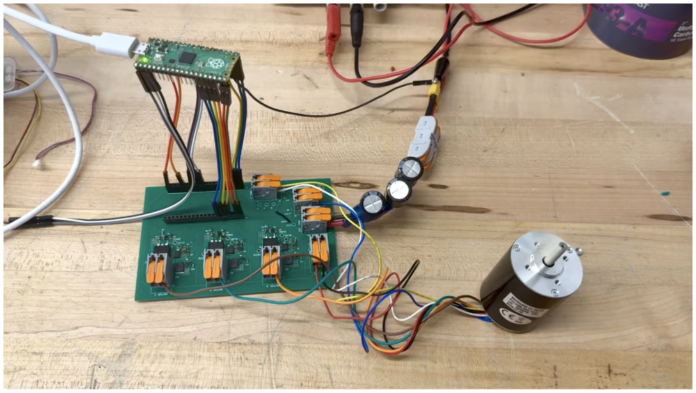Figure 17. Setup with motor and custom PCB.
Following this issue, the motor appeared visually to be driven as expected. However, upon probing the board with an oscilloscope, we found several issues in the waveforms. The first issue we noticed was the asymmetry in the waveform on a single phase of the motor as it was being driven. Notably, the trapezoidal form appeared lopsided, when we expected it to appear symmetrical. Initially, we thought that it may have been an artifact of the manner in which the oscilloscope screen low-passes filters in the display, but upon downloading the data points from the oscilloscope and low-passing the values ourselves, we realized that the waveform was truly uneven.
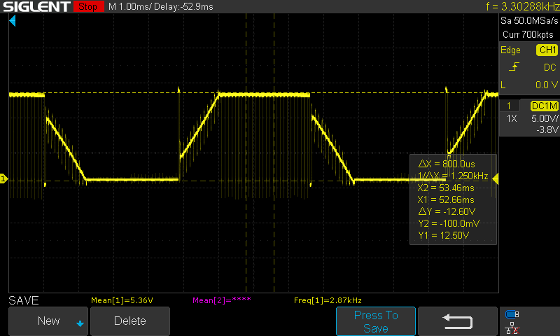Figure 18A. Counterclockwise trapezoidal waveform. The yellow waveform is the voltage at the switch node (i.e. the motor phase).
We initially suspected that this was caused by a delay between the hall sensor updates and the gate driver outputs, perhaps due to RP2040 computation time. However, overclocking the RP2040 did not affect the waveform at all. Our second hypothesis was that this behavior was a result of the motor construction being asymmetrical. By using a second lookup table in order to drive the motor in the reverse direction, we were able to compare the waveforms of the clockwise and counterclockwise drives. Ultimately, we discovered that the strange waveform is a result of asymmetrical motor construction, as the counterclockwise drive results in an uneven trapezoid while the clockwise drive results in a symmetrical shape.
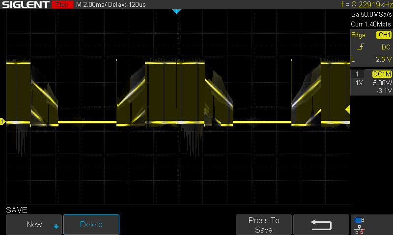Figure 18B. Clockwise trapezoidal waveform. The yellow waveform is the voltage at the switch node (i.e. the motor phase).
4.4 Switching Time Modifications
Upon further inspection of our waveforms, we discovered an interesting pattern in the behavior of the gate drive waveforms. Specifically, there seemed to be interaction between the waveform of the low side and high side gate drive signals. From this oscilloscope trace, it appears that the high side MOSFET (yellow) begins to conduct current before the low side MOSFET (purple) fully turns on. Therefore, the issue is that we did not include enough deadtime for the specific components we chose. In order to fix this, we increased the deadtime to a safer margin, resulting in the improvement of the waveform. Notably, this behavior wasn’t present on the initial board we tested with because the gate driver had quicker switching times, and thus the deadtime was sufficient for those specific components.
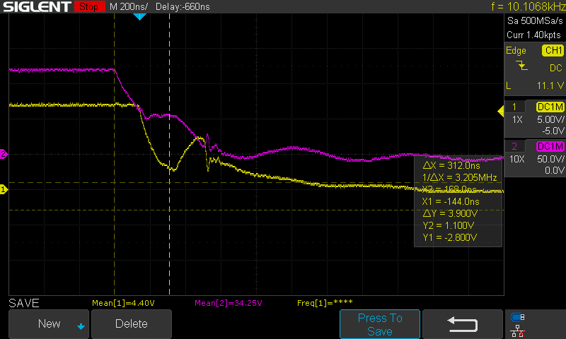Figure 19. Shoot-through artifact. The yellow waveform is the high side MOSFET gate voltage. The purple waveform is the low side MOSFET gate voltage.
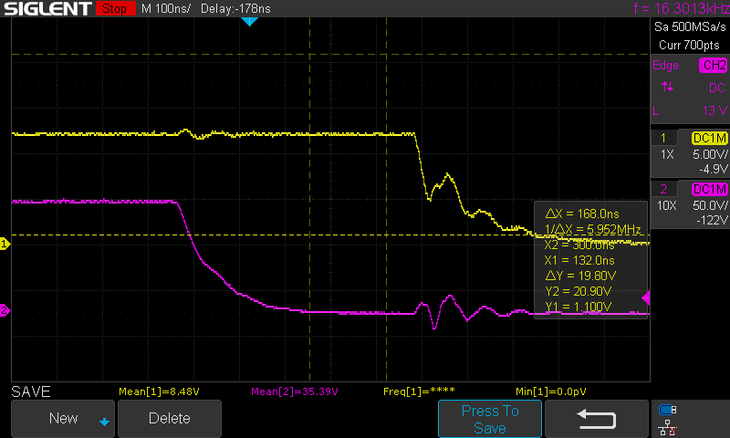Figure 20. Extended dead time. The yellow waveform is the high side MOSFET gate voltage. The purple waveform is the low side MOSFET gate voltage.
However, there still existed notable ringing on the signals. We suspected that this ringing was the result of a circuitry bug. Specifically, we considered that the oscillations on a gate drive form were related to the LC ringing associated with switching a MOSFET. In order to dampen the oscillations, we initially tried changing our gate drive resistor from 10 Ω to 33 Ω, but the improvement was not as helpful as we had hoped. Ultimately, we discovered that the ringing was a result of the ground loop of the oscilloscope probe, and the oscillations were dampened once we changed the placement of our ground probe.
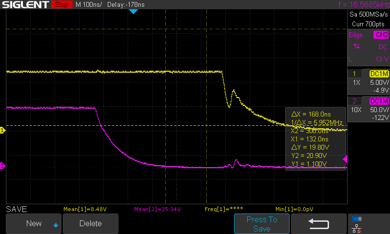Figure 21. Minimized probe inductance. The yellow waveform is the high side MOSFET gate voltage. The purple waveform is the low side MOSFET gate voltage.
4.5 Additional Electrical Considerations
A primary consideration in our development of this circuitry is the manner in which current flows through each half bridge during different stages of commutation. This is simple at steady state. When a phase is pulled high, the current pulled by the motor is drawn from the bus voltage through the conducting high side MOSFET. When a phase is pulled to ground, the current is pushed to ground through the conducting low side MOSFET. When tristated, there is no current flowing through the terminal. However, as the MOSFETs are switching, the behavior of the current—and the resulting voltage waveforms—is less trivial, on account of transient current drawn by the motor inductors. Using the testpoints we placed on our board, we were able to visualize these effects as we probed different nodes.
Within one step in commutation, there are four states of switching to consider on the phase “pulled high,” which is applying PWM:
- High to tristated
- Tristated to ground
- Grounded to tristated
- Tristated to high
Consider transition 1, with the initial condition that the phase is pulled high and conducting current through the high side MOSFET. There is initially substantial current being drawn by the inductance of the motor phases. As the MOSFET begins to turn off, it stops conducting current, but the inductor still continues to draw current from the half bridge. Therefore, it conducts current from the body diode of the low-side MOSFET. In order for this to occur, the potential across the diode must be 0.7 V, as pictured in Figure 22. As a result of this, the switch node is pulled to -0.7 V, which is reflected on the oscilloscope trace in Figure 23.
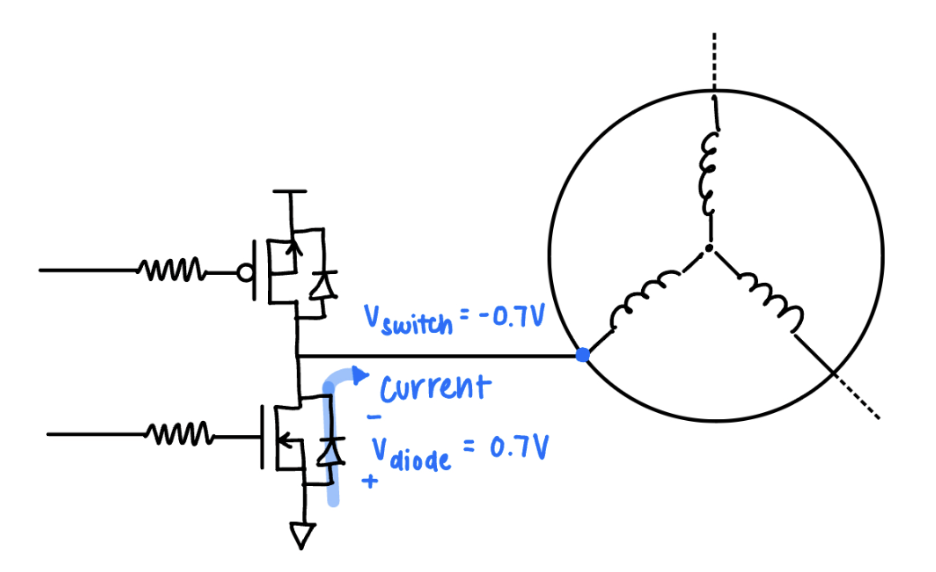Figure 22. HIGH (PWM) Phase during tristate deadtime.
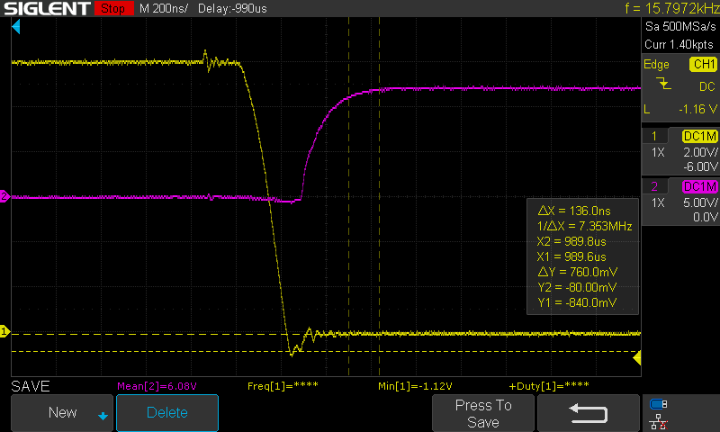Figure 23. PWM switching from high to low. The yellow waveform is the voltage at the switch node (i.e. the motor phase). The purple waveform is the low side MOSFET gate voltage.
We can conclude that during transition 1, the voltage at the switch node—the drain for the high side MOSFET—quickly slews from Vbus to -0.7 V during transition 1. This behavior causes the Miller effect: The gate-drain capacitance (Cgd) appears much larger at the MOSFET gate, and the voltage waveform of the high side gate appears to “plateau” during the slew.
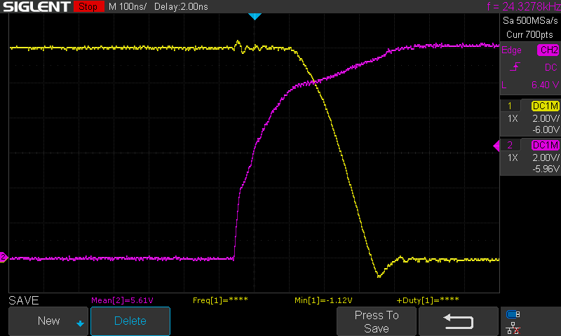Figure 24. PWM switching from high to low. The yellow waveform is the voltage at the switch node (i.e. the motor phase). The purple waveform is the high side MOSFET gate voltage.
Following transition 1, deadtime is introduced to allow the high-side to fully stop conducting through the MOSFET. Transition 2 is characterized by the low-side MOSFET switching on after this deadtime. The low side begins to conduct current through the MOSFET rather than the body diode, so the potential at the switch node is no longer -0.7 V. Instead, the inductance of the motor drives the potential to draw current through the gate, which acts as a resistor once fully conducting. Therefore, the voltage at the switch node is driven to V = – Imotor • RDS_ON. This is reflected in Figure 23, where the voltage is -0.08 V. Note that this magnitude reflects the small RDS_ON = 2.8 mΩ of the MOSFET.
Transition 3 produces a similar effect to transition 1 as the phase is briefly tristated. Because of the motor inductance, current is drawn through the body diode of the low-side MOSFET so the potential at the switch node is pulled to -0.7 V.
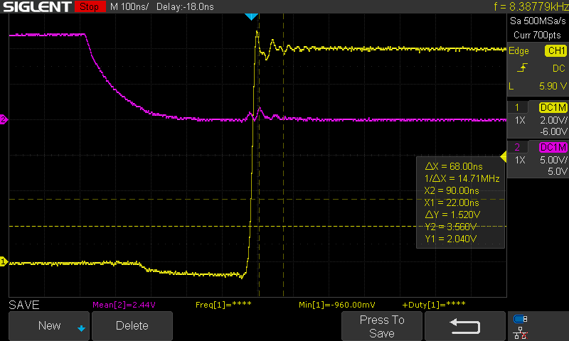Figure 25. PWM switching from low to high. The yellow waveform is the voltage at the switch node (i.e. the motor phase). The purple waveform is the low side MOSFET gate voltage.
Transition 4 is characterized by a transition from tristated to conducting through the high-side MOSFET, which is associated with quickly pulling the voltage of the switch node from -0.7 V to Vbus. Similar to in transition 1, this behavior causes the Miller effect, and the voltage waveform of the high side gate is expected to “plateau” during the slew. The plateau is less visible for this transition than transition 1, but the change in slope of the voltage waveform still exists.
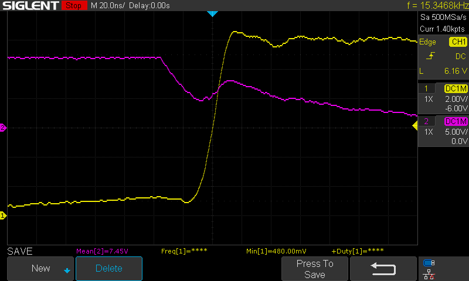Figure 26. PWM switching from low to high. The yellow waveform is the voltage at the switch node (i.e. the motor phase). The purple waveform is the high side MOSFET gate voltage.
These considerations extend beyond PWM switching, and are also relevant to switching between commutation steps. Specifically, when a phase becomes tristated, there is a transient 0.7 V voltage across either the high side MOSFET (when switching from ground to tristated) or the low side MOSFET (when switching from high to tristated). These transient voltages are very visible when viewing the trapezoidal waveform. The former transient appears as a Vbus + 0.7 V signal as the phase switches from grounded to floating, or visually at the rising edge of the trapezoid. The latter transient appears as a -0.7 V signal as the phase switches from high to floating, or visually at the falling edge of the trapezoid.

Figure 27. Trapezoidal waveform on a single phase. The yellow waveform is the voltage at the switch node (i.e. the motor phase).
4.6 Safety
By working with a low power, 12V motor, we were able to ensure (human) safety. Some of the components were not so lucky. Even though some components might have overheated during testing, a heat monitoring gun was used and all components were inspected thoroughly before the system was turned on.
4.7 Usability
The system is easily controlled using the serial monitor. Beyond operating the motor, we included many testpoints and a status LED on the PCB, which allows users to easily analyze the circuit and the associated waveforms. The project serves as a unique, hands-on learning opportunity not only for the development of a trapezoidal motor control system, but also for in-depth circuit analysis.